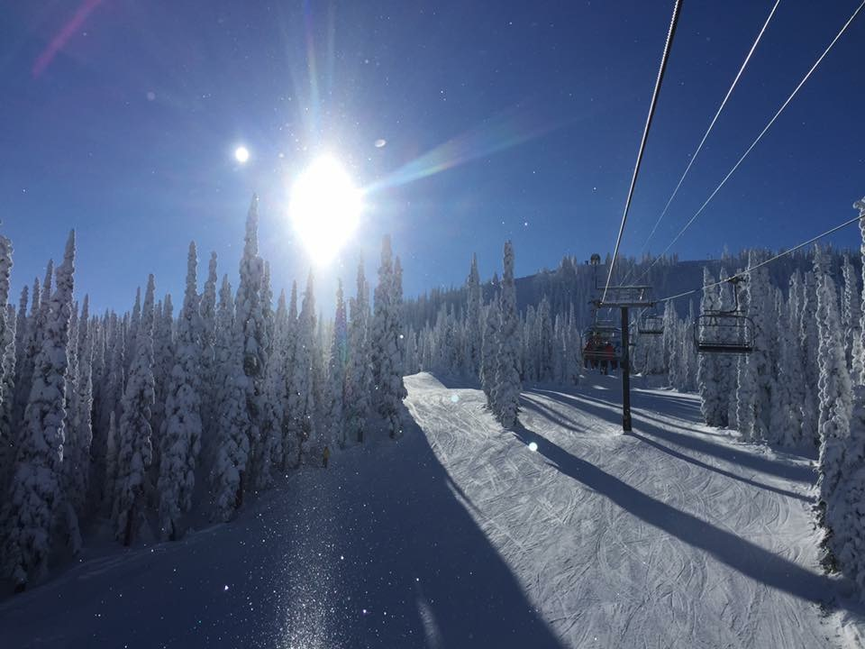
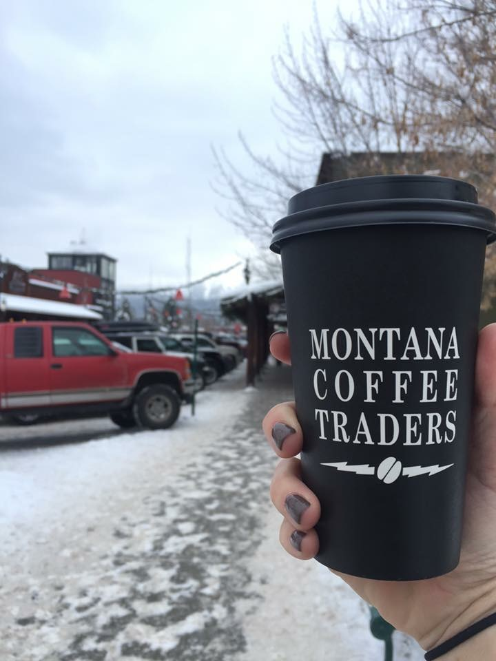
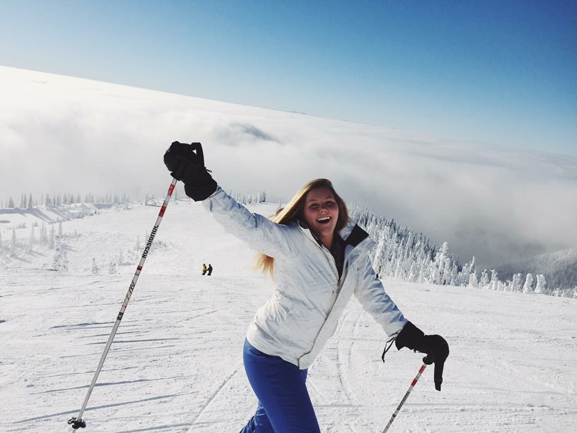
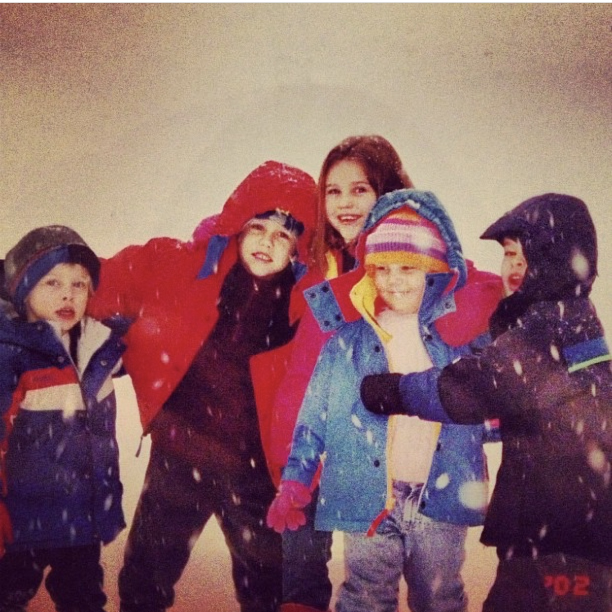

Every winter my family and I travel to the beautiful city of Whitefish, Montana. I have been going to Montana every winter and about every other summer since I was 3 years old. I consider it my second home. Although the summers there are beautiful, I prefer the winter. Since I am from Florida, I love being in the snow around Christmas time. We have a house up on the Mountain, which is about a 20 minute drive from Whitefish. My whole family loves to ski on the incredible slopes there and although we only go for about 2 weeks once a year, I have become a great skier. My parents would send me to ski school as a kid so I learned how to ski pretty quickly. Now I can ski advanced slopes with my siblings and friends. One website I frequently visit in the weeks leading up to our vacation is the Whitefish Mountain Resort Homepage. This site gives me information on the weather, activities on the mountain, and even has live web cams of different slopes! It is super cool and helps me prepare for my trips.
Check out this great trail map of all the slopes! If you look on the map you can see that the trails are all color coded. These colors stand for different levels of difficulty. I mostly ski blues and black diamonds.
| Green | Blue | Black Diamond | Double Black Diamond |
|---|---|---|---|
| Beginner | Intermediate | Advanced | Expert |
After a long day of skiing, I love to head down to town to shop and eat. There are so many great stores and restaurants to choose from. My favorite store is The Toggery, which has so much cute jewelry and clothing. Clothes range from jeans and sweaters to ski pants and jackets! I also love The Toggery because it is connected to my favorite coffee shop - Montana Coffee Traders. They make the best coffee in so many different flavors like vanilla, hazelnut, and even huckleberry! Huckleberry flavored candies, jams, and other foods are a Montana speciality. They're delicious. After some shopping my family loves to eat in one of the many restaurants Whitefish has to offer. There is an awesome bakery called Lula's that sells the best pies, there is also a delicious sushi restaurant called Wasabi. However, I have included a list of my top 5 favorite places to eat while visiting.
Other than skiing and shopping, there are many fun activities to do in the winter. Many people love to go snowmobiling. My family has gone several times before and it is so much fun! You can either snowmobile down in Whitefish or up on the mountain where our house is. Tour guides will take you on trails through the trees and show you some great views. Another fun activity is dog sledding. I have only gone once before when I was a kid but it was incredible. We sat in sleds with warm blankets and huskies pulled us around through trails in the snow. It was amazing. I have so many great memories in Montana and I cannot wait to take my family there someday. For now, I will just keep checking the web cams in anticipation for this coming winter!
Here are some more pictures showcasing some of my favorite times in Montana.


